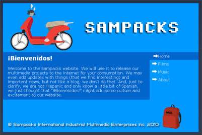
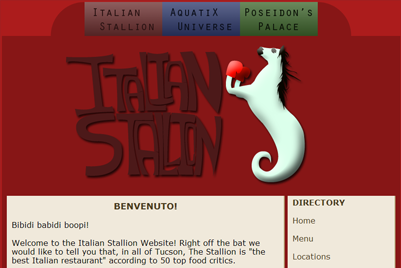
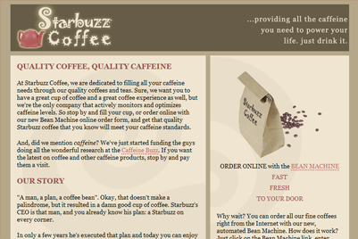

My Web Design:
|  | Sampacks:A personal/ entrepreneurial website made for an amateur movie/music production company(not real, just fictional) |
|  | Italian Stallion:A business website made for a fictional 6 star restaurant located in Tucson, Arizona. The restaurant is part of a famous waterpark complex built by Tatar Industries, the restaurant is accompanied also by a 6 star hotel. |
|  | Starbuzz:A website built for a Coffee Shop called Starbuzz, who clearly took inspiration from the well-know Starbucks coffee shop chain. |